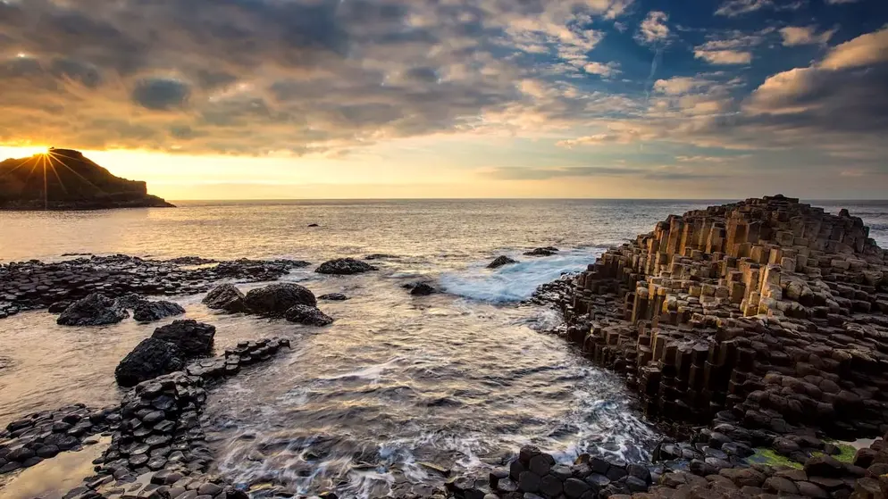

Discover the Giant's Causeway
Located on the north coast of Antrim, the Giant's Causeway is one of Ireland's most famous natural landmarks. It consists of approximately 40,000 interlocking basalt columns formed by volcanic activity 60 million years ago.

What Can You See?
Explore the unique rock formations and enjoy spectacular views of the Causeway Coast. The Giant's Causeway is a UNESCO World Heritage Site.
- Thousands of naturally formed basalt columns.
- The Giant's Boot, a rock formation resembling a large boot.
- The Organ, a collection of tall basalt columns.
- Scenic coastal views and walking trails.
- Exhibitions inside the visitors centre.
History and Mythology
According to Irish mythology, the Giant's Causeway was built by the legendary Irish giant Fionn Mac Cumhaill, also known as Finn McCool.
The legend tells of Fionn building a pathway across the sea to Scotland to confront a Scottish giant named Benandonner.
Although the legend remains a popular part of Irish folklore, the columns were actually formed when volcanic lava cooled and contracted, creating their distinctive shapes.
Experience Irish Culture
Enjoy Irish-style instrumental music featuring traditional instruments such as the fiddle and the flute.
Galway by Kevin MacLeod. Licensed under Creative Commons Attribution 4.0 . Music from Incompetech.
Plan Your Visit
Before travelling, check the official website for current opening hours, visitor centre admission prices and visitor information.
- Wear suitable footwear for uneven surfaces.
- Bring a waterproof jacket.
- Check the weather forecast before visiting
- Be careful around wet and slippery rocks.
- Follow designated paths and safety signs.
- Respect the natural environment.
Visitors should take extra care near the coastline, particularly during strong winds and rough sea conditions.